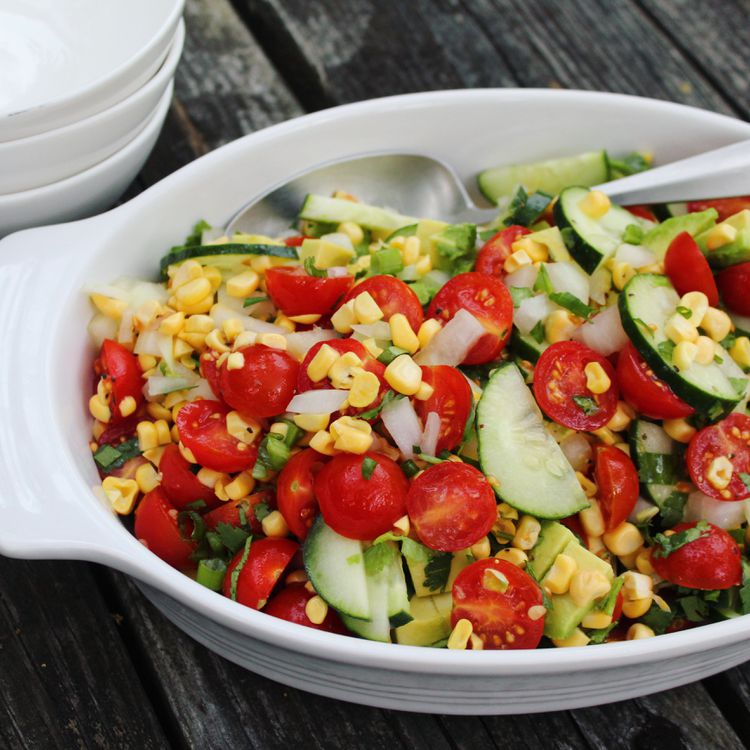

Raw Corn Salad

Description
The corn salad is quick, wholesome, and perfect for summer. No cooking
required! Uses fresh, raw, sweet corn on the cob, tomato, cucumber, and
avocado, but it's easy to tailor to your taste.
Ingredients
-
ears corn, kernels cut from the cob salt and ground black pepper to
taste
- pint cherry tomatoes, halved
- cucumber, halved lengthwise and sliced
- small sweet onion, finely chopped
- bunch fresh cilantro, chopped, or to taste
- green onion, green parts only, thinly sliced
- drizzle extra-virgin olive oil
- lime, juiced
Steps
-
Mix corn kernels, tomatoes, cucumber, avocado, onion, cilantro, and
green onion together in a large bowl.
-
Add a drizzle of olive oil. Squeeze lime juice into the bowl and season
with salt and pepper.